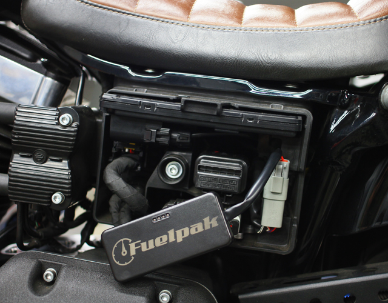
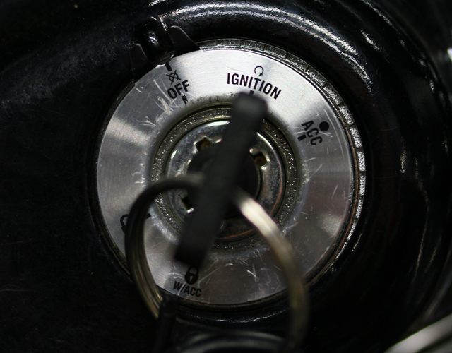
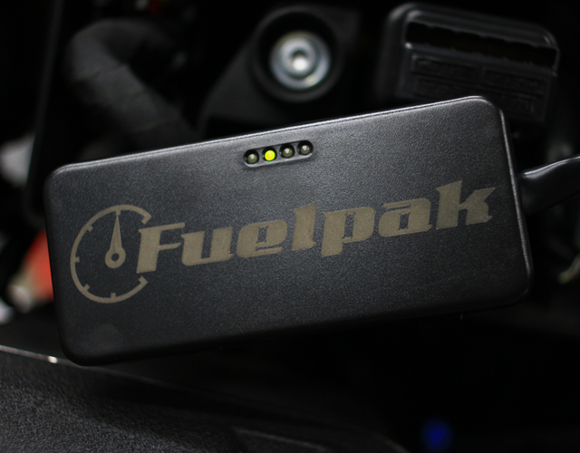
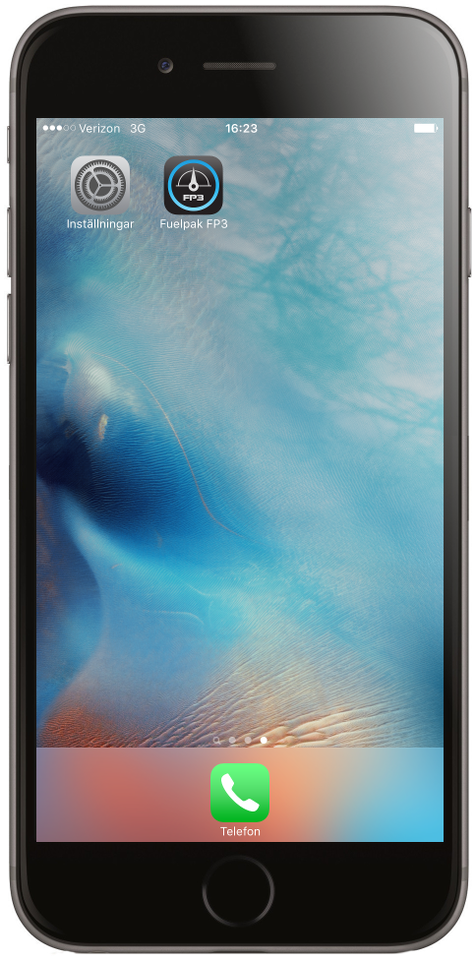
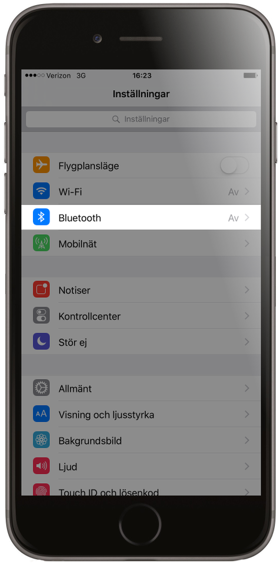
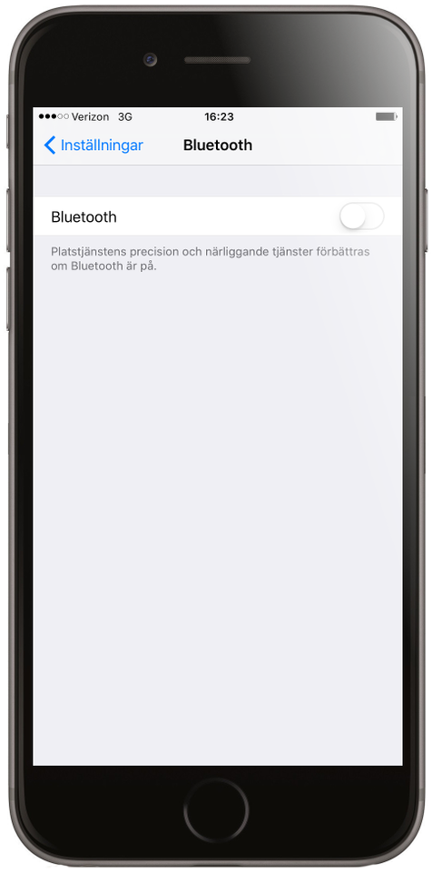
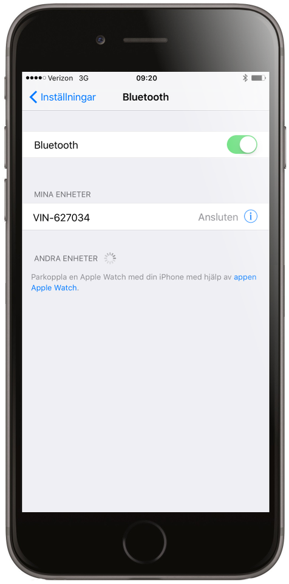

1. Installerar FP3 i din MCs diagnostik port.
2. Sätt på MCs Tändning.
3. Efter ett par sekunder, en led blinkar sakta.
4. På din iOS enhet, gå till inställningar.
5. välj Bluetooth.
6. Aktivera Bluetooth (om den inte redan är aktiverad). Hitta din MC i drop listan av tillgängliga enheter och välj den.
7. När du är uppkopplad. gå till FP3 app. App skall nu hitta FP3 hårdvara kopplad till din MC.
